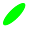

►
Koodarin käsikirja
1
Aloita tästä
2
Racket BSL -
kieli
3
Kuvat -
2htdp/
image
4
Racket Turtle
5
Pelit yms. -
2htdp/
universe
6
Display-
Read
7
Sanasto
Index
►
3
Kuvat -
2htdp/
image
3.1
Peruskuviot
3.2
Kuvien yhdistely
3.3
Kuvien asettelu ruudulle
3.4
Kuvien muokkaus
3.5
Kuvan ominaisuudet
3.6
Bitmapit
3.7
Värit
▼
3.1
Peruskuviot
Nelikulmiot
Kolmiot
Monikulmiot
Ympyrät ja ellipsit
Muut kuviot
6.2.1
← prev
up
next →
3.1
Peruskuviot
Nelikulmiot
Kolmiot
Monikulmiot
Ympyrät ja ellipsit
Muut kuviot

← prev
up
next →